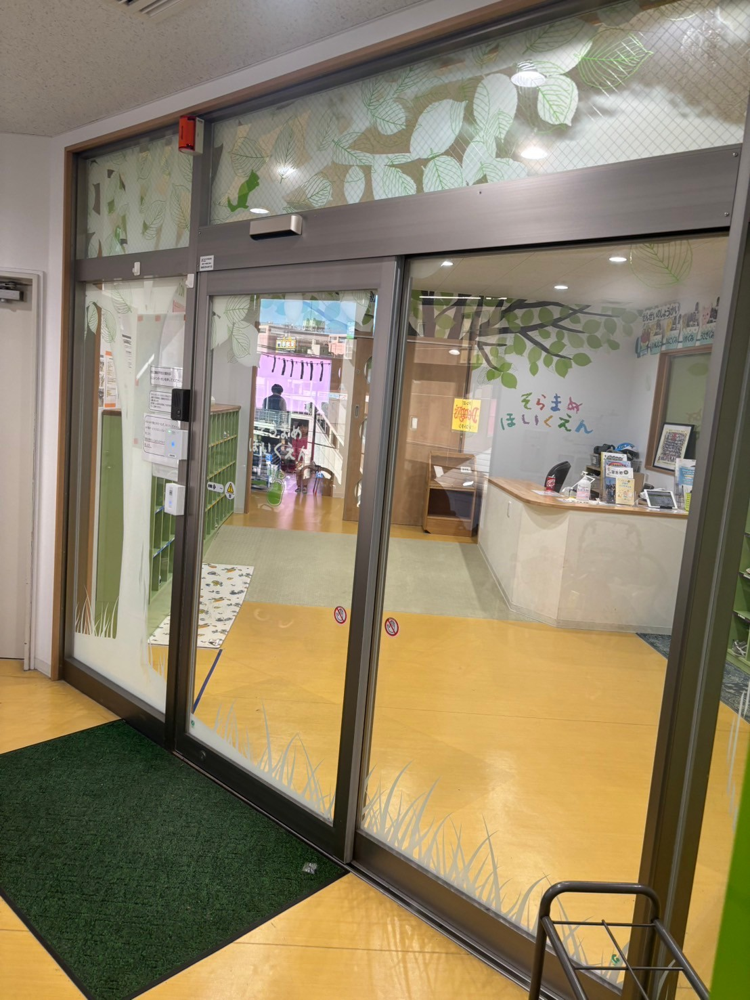
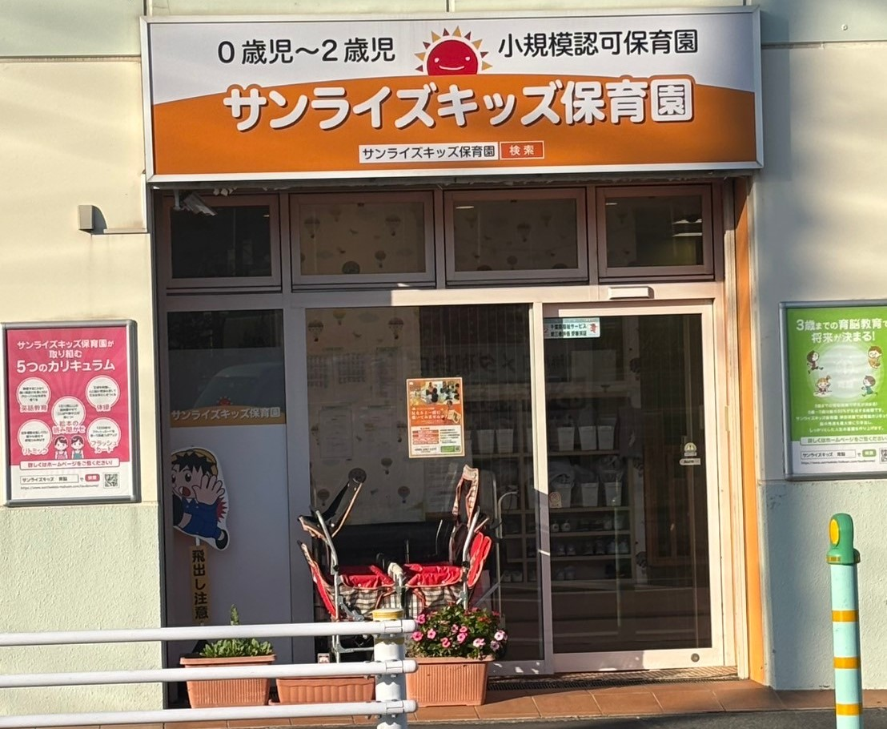

子どもと遊べるスポットの紹介
トップページに戻る
保育園
そらまめ保育園

そらまめ保育園津田沼駅前は、千葉県習志野市の津田沼駅から徒歩わずか数分の場所に位置する、便利で温かみのある保育園です。
また、駅近という立地から、通勤中の保護者の方にもご利用いただきやすい環境が整えられています。
柔軟な預かり時間や栄養バランスを考えた給食など、働く保護者の方を全力でサポートしてくれます。
住所: 千葉県習志野市谷津7丁目8-1
サンライズキッズ保育園

サンライズキッズ保育園 津田沼園は、千葉県習志野市の津田沼駅から徒歩圏内に位置する、安心と愛情あふれる保育を提供する施設です。
この保育園は、日常の保育の中に英語を取り入れた教育が行われています。専任の英語講師が楽しく、親しみやすい形で指導してくれます。
また、一人ひとりにしっかりと目が届く少人数制を採用されていて、個々の成長に寄り添ったケアを心がけられています。
運動会や発表会など季節ごとのイベントを通じて、子どもたちの成長を実感できる機会を提供してくれます。
住所: 千葉県習志野市津田沼4丁目11-11
小学校
津田沼小学校

「生きる力を育む」を教育目標に掲げ、学びの楽しさと意欲を引き出す教育を推進しています。
特に、基礎学力の定着に重点を置きながら、児童一人ひとりの個性や興味を尊重した教育を行っています。
また、思いやりと協調性を育てる道徳教育や、環境学習などの特色ある授業が行われています。
校舎はとてもきれいで校庭も広く、遊具も充実しているので子供に伸び伸びとした学校生活を送ってもらいたい人にはお勧めです。
所在地: 千葉県習志野市津田沼4丁目5-2
子どもと遊べるスポットの紹介
トップページに戻る